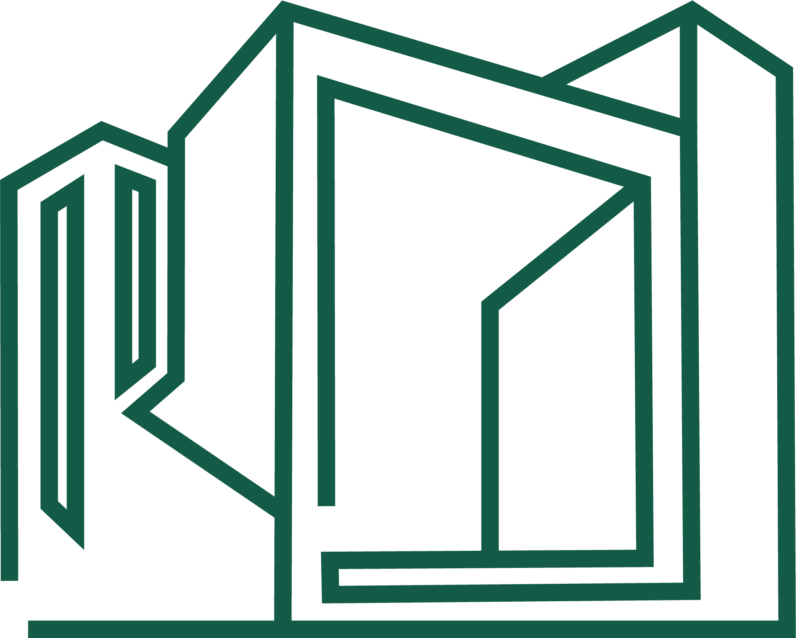

Divisi Umum Roemantara
Pintasan ke webapp GA · Admin · Finance · HR · Legal · Tugas
Buka webappPasang ikon di layar utama
iPhone (Safari)
- Tekan tombol Bagikan (kotak dengan panah ke atas).
- Pilih Tambah ke Layar Utama.
- Pastikan ikon yang tampil logo Roemantara, lalu tekan Tambah.
Android (Chrome)
- Tekan menu ⋮ di kanan atas.
- Pilih Tambahkan ke layar utama, lalu Tambahkan.
Ikon di layar utama langsung membuka webapp di claude.ai. Buka ikon ini di browser yang sudah masuk (login) ke claude.ai.